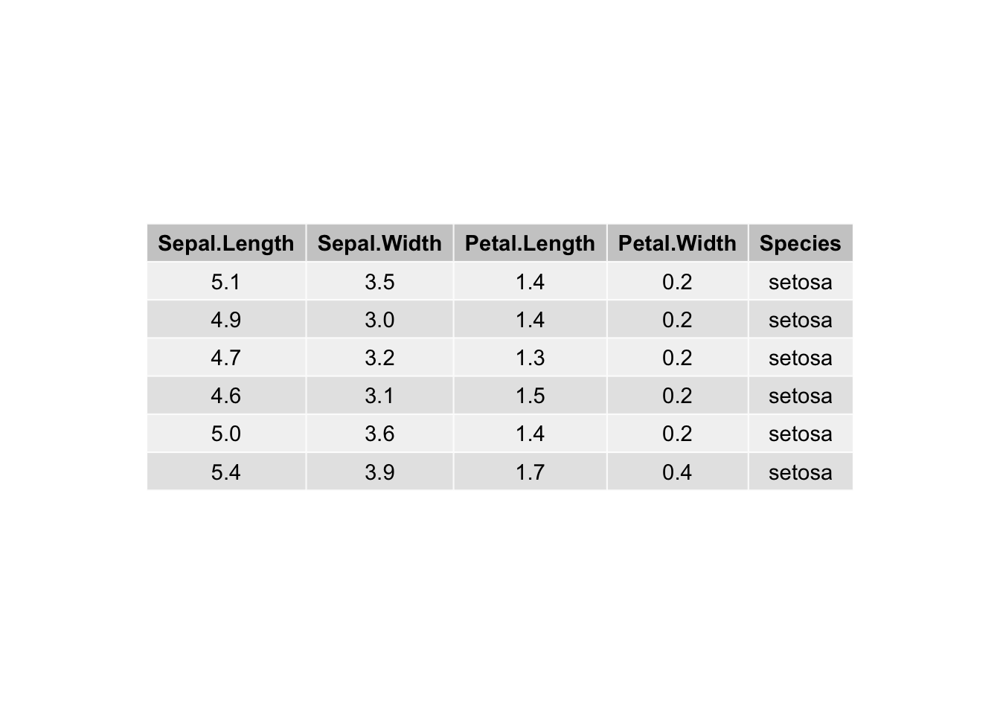
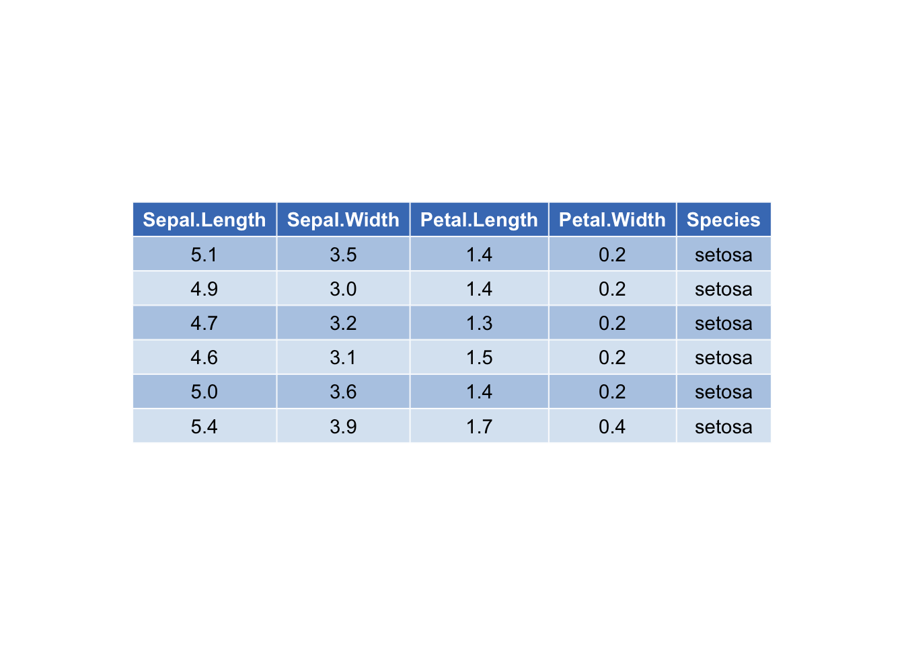
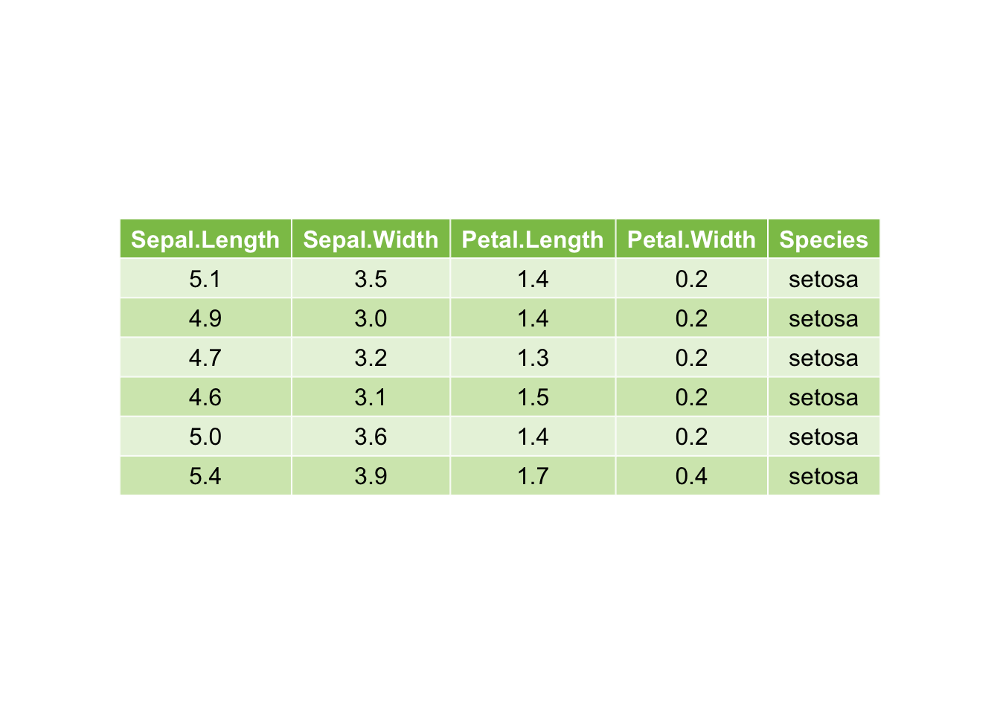

第 8 章 表格绘制
8.1 单一的表格
这一部分可能有很多优秀的第三方包可以制作，这里介绍前3个优秀的表格制作包，分别为
8.1.1 DT包
## 可生成交互式HTML表格
library(DT)
datatable(iris)# 定制表格
datatable(iris) %>%
formatStyle('Sepal.Length', fontWeight = styleInterval(5, c('normal', 'bold'))) %>%
formatStyle(
'Sepal.Width',
color = styleInterval(c(3.4, 3.8), c('white', 'blue', 'red')),
backgroundColor = styleInterval(3.4, c('gray', 'yellow'))
) %>%
formatStyle(
'Petal.Length',
background = styleColorBar(iris$Petal.Length, 'steelblue'),
backgroundSize = '100% 90%',
backgroundRepeat = 'no-repeat',
backgroundPosition = 'center'
) %>%
formatStyle(
'Species',
transform = 'rotateX(45deg) rotateY(20deg) rotateZ(30deg)',
backgroundColor = styleEqual(
unique(iris$Species), c('lightblue', 'lightgreen', 'lightpink')
))8.1.2 gt包
## 出版级别表格制作
library(gt)
library(tidyverse)
library(glue)
# Define the start and end dates for the data range
start_date <- "2010-06-07"
end_date <- "2010-06-14"
# Create a gt table based on preprocessed
# `sp500` table data
sp500 %>%
filter(date >= start_date & date <= end_date) %>%
select(-adj_close) %>%
gt() %>%
tab_header(
title = "S&P 500",
subtitle = glue::glue("{start_date} to {end_date}")
) %>%
fmt_date(
columns = date,
date_style = 3
) %>%
fmt_currency(
columns = c(open, high, low, close),
currency = "USD"
) %>%
fmt_number(
columns = volume,
suffixing = TRUE
)| S&P 500 | |||||
| 2010-06-07 to 2010-06-14 | |||||
| date | open | high | low | close | volume |
|---|---|---|---|---|---|
| Mon, Jun 14, 2010 | $1,095.00 | $1,105.91 | $1,089.03 | $1,089.63 | 4.43B |
| Fri, Jun 11, 2010 | $1,082.65 | $1,092.25 | $1,077.12 | $1,091.60 | 4.06B |
| Thu, Jun 10, 2010 | $1,058.77 | $1,087.85 | $1,058.77 | $1,086.84 | 5.14B |
| Wed, Jun 9, 2010 | $1,062.75 | $1,077.74 | $1,052.25 | $1,055.69 | 5.98B |
| Tue, Jun 8, 2010 | $1,050.81 | $1,063.15 | $1,042.17 | $1,062.00 | 6.19B |
| Mon, Jun 7, 2010 | $1,065.84 | $1,071.36 | $1,049.86 | $1,050.47 | 5.47B |
8.1.3 sjPlot包
library(sjPlot)
library(sjmisc)
library(sjlabelled)
# sample data
data("efc")
efc <- as_factor(efc, c161sex, c172code)
m1 <- lm(barthtot ~ c160age + c12hour + c161sex + c172code, data = efc)
tab_model(m1)| Total score BARTHEL INDEX | |||
|---|---|---|---|
| Predictors | Estimates | CI | p |
| (Intercept) | 87.15 | 77.96 – 96.34 | <0.001 |
| carer’ age | -0.21 | -0.35 – -0.07 | 0.004 |
|
average number of hours of care per week |
-0.28 | -0.32 – -0.24 | <0.001 |
| carer’s gender: Female | -0.39 | -4.49 – 3.71 | 0.850 |
|
carer’s level of education: intermediate level of education |
1.37 | -3.12 – 5.85 | 0.550 |
|
carer’s level of education: high level of education |
-1.64 | -7.22 – 3.93 | 0.564 |
| Observations | 821 | ||
| R2 / R2 adjusted | 0.271 / 0.266 | ||
## 定制化绘制
tab_model(
m1,
CSS = list(
css.depvarhead = 'color: red;',
css.centeralign = 'text-align: left;',
css.firsttablecol = 'font-weight: bold;',
css.summary = 'color: blue;'
)
)| Total score BARTHEL INDEX | |||
|---|---|---|---|
| Predictors | Estimates | CI | p |
| (Intercept) | 87.15 | 77.96 – 96.34 | <0.001 |
| carer’ age | -0.21 | -0.35 – -0.07 | 0.004 |
|
average number of hours of care per week |
-0.28 | -0.32 – -0.24 | <0.001 |
| carer’s gender: Female | -0.39 | -4.49 – 3.71 | 0.850 |
|
carer’s level of education: intermediate level of education |
1.37 | -3.12 – 5.85 | 0.550 |
|
carer’s level of education: high level of education |
-1.64 | -7.22 – 3.93 | 0.564 |
| Observations | 821 | ||
| R2 / R2 adjusted | 0.271 / 0.266 | ||
8.2 丰富的表格
8.2.1 ggpubr
R-ggpubr包在统计绘图 | 一行代码教你绘制顶级期刊要求配图有介绍其如何绘制科研图表，这里则重点介绍其绘制表格的函数，当然还是可以和ggplot2图表对象一起展示的。
library(ggpubr)
df <- head(iris)
# Default table
# Remove row names using rows = NULL
ggtexttable(df, rows = NULL)
## 定制主题
ggtexttable(df, rows = NULL, theme = ttheme("mBlue"))
## 自定义
ggtexttable(df, rows = NULL,
theme = ttheme(
colnames.style = colnames_style(color = "white", fill = "#8cc257"),
tbody.style = tbody_style(color = "black", fill = c("#e8f3de", "#d3e8bb"))
)
)
8.2.2 ggpmisc
R-ggpmisc包中绘制表格的函数为stat_fit_tb(),其功能主要是一些统计结果和拟合结果进行表格展示。
library(ggpmisc)
library(ggrepel)
library(xts)
library(lubridate)
library(nlme)
library(quantreg)
library(broom)
library(broom.mixed)
library(hrbrthemes)
set.seed(4321)
# generate artificial data
x <- 1:100
y <- (x + x^2 + x^3) + rnorm(length(x), mean = 0, sd = mean(x^3) / 4)
my.data <- data.frame(x,
y,
group = c("A", "B"),
y2 = y * c(0.5,2),
block = c("a", "a", "b", "b"),
wt = sqrt(x))formula <- y ~ x + I(x^2) + I(x^3)
plot04 <- ggplot(my.data, aes(x, y)) +
geom_point(shape=21,fill="#BC3C28",colour="black",size=3) +
geom_smooth(method = "lm", formula = formula) +
stat_fit_tb(method = "lm",
method.args = list(formula = formula),
tb.vars = c(Parameter = "term",
Estimate = "estimate",
"s.e." = "std.error",
"italic(t)" = "statistic",
"italic(P)" = "p.value"),
label.y = "top", label.x = "left",
parse = TRUE) +
labs(
title = "Example of <span style='color:#D20F26'>ggpmisc::stat_fit_tb function</span>",
subtitle = "processed charts with <span style='color:#1A73E8'>stat_fit_tb()</span>",
caption = "Visualization by <span style='color:#0057FF'>DataCharm</span>") +
hrbrthemes::theme_ipsum(base_family = "Roboto Condensed") +
theme(
plot.title = element_text(hjust = 0.5,vjust = .5,color = "black",
size = 20, margin = margin(t = 1, b = 12)),
plot.subtitle = element_text(hjust = 0,vjust = .5,size=15),
plot.caption = element_text(face = 'bold',size = 12)
)